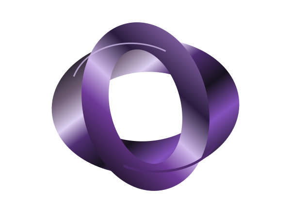

UI/UX Design
From first questions to a focused, high-fidelity product experience.
From $2,400OPEN TO INTERESTING CONVERSATIONS
I'm Paul, a product designer crafting clean & modern
digital experiences. A little clarity goes a long way.

01 / PORTFOLIO
Self-initiated portfolio concepts. Brands, interfaces and case studies are original demonstrations, not client commissions.
02 / ABOUT ME
I turn complicated product journeys into interfaces that feel considered, useful and easy to navigate.
My process moves from framing the right question to exploring possible answers, prototyping and testing the details.
This portfolio is a fictional designer persona, showcasing original product concepts rather than unverified career claims.
THE WORKSPACE / ORIGINAL CSS STUDY
03 / HOW I CAN HELP
From first questions to a focused, high-fidelity product experience.
From $2,400Responsive marketing sites with thoughtful motion and clear journeys.
From $1,800Practical foundations, components and guidelines that grow together.
From $3,200Illustrative starting fees. Scope and quotation would be agreed individually.
04 / A CONSIDERED TOOLKIT
05 / HOW WE WOULD WORK
Start with your users, constraints and the decision that matters.
Prototype early enough to learn something before polishing.
Document decisions, interaction states and the handoff.
HAVE SOMETHING IN MIND?
Small team. Big question. A better product.
Start with a little context.
Local-only project brief. Nothing is emailed or submitted.